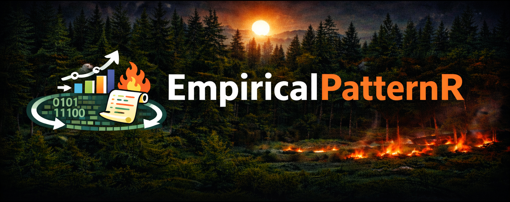

Simulate realistic forest stand patterns using simulated annealing optimization to match empirical targets from field data.

Overview
EmpiricalPatternR generates synthetic forest stands that match observed ecological patterns. Using simulated annealing, the package optimizes tree locations, sizes, and species to simultaneously match multiple targets including stand density, species composition, size distributions, canopy cover, fuel loads, and spatial patterns.
Perfect for: - Fire behavior modeling - Generate stands with realistic fuel structures - Restoration planning - Create target stand conditions - Research - Explore how stand structure affects ecological processes - Teaching - Demonstrate pattern-based ecology
Key Features
- Pre-built configurations for common forest types (pinyon-juniper, ponderosa pine)
- Pattern matching to empirical field data (Huffman et al. 2009)
- Flexible allometry with species-specific equations (Reese, Miller)
- Fast C++ engine with OpenMP parallelization (50-300× speedup)
- Canopy fuel load optimization for fire behavior
- Nurse tree effects for facilitation patterns
- Comprehensive analysis with automated reports and visualizations
- Fully tested with 62 unit tests covering all major functions
Installation
Install from GitHub:
# Install devtools if needed
install.packages("devtools")
# Install EmpiricalPatternR
devtools::install_github("yourusername/EmpiricalPatternR")Quick Start
Use a pre-built configuration:
library(EmpiricalPatternR)
# Get pre-built pinyon-juniper configuration (Huffman et al. 2009)
config <- pj_huffman_2009(
density_ha = 927,
cfl = 1.10,
canopy_cover = 0.40,
max_iterations = 10000
)
# Run simulation
set.seed(123)
result <- simulate_stand(
targets = config$targets,
weights = config$weights,
plot_size = config$simulation$plot_size,
max_iterations = config$simulation$max_iterations,
use_nurse_effect = TRUE,
mortality_prop = 0.10
)
# Comprehensive analysis (console output + CSV files + PDF plots)
analyze_simulation_results(
result = result,
targets = config$targets,
prefix = "my_woodland",
save_plots = TRUE
)Output: - my_woodland_all_trees.csv - All trees with attributes - my_woodland_live_trees.csv - Live trees only - my_woodland_summary.csv - Summary statistics - my_woodland_plots.pdf - Spatial and size distributions
Documentation
Get Started: - Getting Started Guide - Installation, quick start, basic usage - Pinyon-Juniper Example - Complete P-J woodland workflow
- Ponderosa Pine Example - Custom configurations for different forest types
Key Functions: - ?pj_huffman_2009 - Pre-built P-J configuration - ?create_config - Build custom configurations - ?simulate_stand - Main simulation engine - ?analyze_simulation_results - Comprehensive analysis - ?generate_config_template - Generate editable configuration templates
Full Reference: - Function Reference - All functions organized by topic
Create Custom Configurations
For forest types beyond pinyon-juniper:
# Create custom configuration
config <- create_config(
density_ha = 450,
species_props = c(PIPO = 0.70, PSME = 0.20, ABCO = 0.10),
mean_dbh = 35.0,
mean_height = 18.0,
canopy_cover = 0.45,
cfl = 0.85,
clark_evans_r = 1.4,
plot_size = 100,
max_iterations = 5000
)
# Or generate an editable template
generate_config_template(
file = "my_config.R",
config_name = "my_custom_config",
base_config = "pj" # Start from P-J template
)
# Edit my_config.R, then: source("my_config.R"); config <- my_custom_config()See the ponderosa pine vignette for detailed custom configuration examples.
Simulation Workflow
1. Define Configuration
├─ Use pre-built: pj_huffman_2009()
├─ Create custom: create_config()
└─ Or template: generate_config_template()
2. Run Simulation
└─ simulate_stand() with simulated annealing
3. Analyze Results
├─ analyze_simulation_results() for comprehensive output
├─ CSV exports for further analysis
└─ PDF plots for visualization
4. Apply to Research
├─ Fire behavior modeling (FlamMap, FARSITE)
├─ Restoration target development
└─ Ecological pattern analysis
Allometric Equations
Built-in equations from published literature:
# Pinyon-juniper (default)
params_pj <- get_default_allometric_params()
# Ponderosa pine (Reese et al., Miller et al.)
params_pp <- get_ponderosa_allometric_params()
# Custom equations
my_params <- list(
crown_radius = list(
MYSP = list(a = -0.204, b = 0.649, c = 0.421) # ln(CD) = a + b*ln(DBH) + c*ln(H)
),
height = list(
MYSP = list(a = 27.0, b = 0.025) # H = 1.3 + a*(1-exp(-b*DBH))
),
foliage = list(
MYSP = list(a = -2.287, b = 1.924) # ln(W_f) = a + b*ln(DBH)
)
)
# Use in calculations
height <- calc_height(dbh = 40, species = "MYSP", params = my_params)
radius <- calc_crown_radius(dbh = 40, height = height, species = "MYSP", params = my_params)Performance
The package uses optimized C++ with OpenMP parallelization:
| Function | R Version | C++ Version | Speedup |
|---|---|---|---|
calc_canopy_cover() |
2.5s | 0.05s | 50× |
calc_tree_attributes() |
15s | 0.05s | 300× |
| Full simulation (10k iterations) | ~45 min | ~5 min | 9× |
Fast versions available: - calc_canopy_cover_fast() - Parallelized canopy cover - calc_tree_attributes_fast() - Batch tree calculations - calc_clark_evans_fast() - Optimized spatial index - calc_stand_metrics_parallel() - Full metrics with parallelization
Package Structure
EmpiricalPatternR/
├── R/
│ ├── allometric_equations.R # Species-specific equations
│ ├── config_system.R # Configuration management
│ ├── forest_simulation.R # Main simulation engine
│ └── performance_utils.R # Fast C++ wrappers
├── src/ # C++ optimized functions
│ ├── OptimizedUtilitiesOpenMP.cpp
│ └── NumericUtilities.cpp
├── inst/examples/ # Complete working examples
│ ├── example_01_pinyon_juniper.R
│ └── example_02_ponderosa_pine.R
├── vignettes/ # Extended tutorials
│ ├── getting-started.Rmd
│ ├── pinyon-juniper.Rmd
│ └── ponderosa-pine.Rmd
├── tests/testthat/ # Unit tests (62 tests)
└── man/ # Function documentationCitation
If you use this package in your research, please cite:
citation("EmpiricalPatternR")Original Idea
Pommerening, A., 2006. Evaluating structural indices by reversing forest structural analysis. Forest Ecology and Management 224, 266–277. https://doi.org/10.1016/j.foreco.2005.12.039
Pommerening, A. and Stoyan, D., 2008. Reconstructing spatial tree point patterns from nearest neighbour summary statistics measured in small subwindows. Canadian Journal of Forest Research 38, 1110–1122. https://doi.org/10.1139/X07-222
Contributing
Contributions are welcome! Please: 1. Fork the repository 2. Create a feature branch 3. Add tests for new functionality 4. Ensure devtools::check() passes 5. Submit a pull request
Contact
For questions or issues: - Open an issue on GitHub - See documentation - Contact the package maintainer
Built with: R, Rcpp, data.table, spatstat, ggplot2